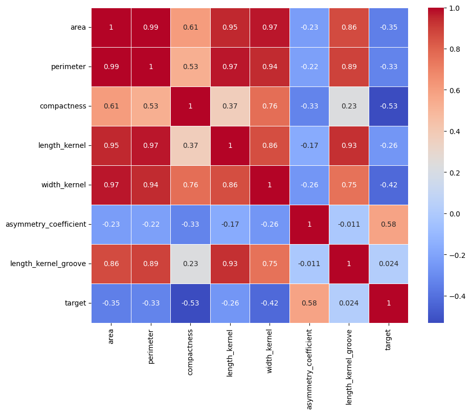

Hi, I'm Francisco Tolosa
Data analyst // Bachelor of Business // Business Administrator
I have fulfilled functions such as Product manager, Head of operational management, and planner and dispatcher. In these roles I have learned to: analyze databases, create products, market analysis, improve processes, planning and control of KPI compliance, train, lead and motivate work teams and customer experience. Currently studying Management and Leadership - SAIT
franciscojosetolosa@hotmail.com
+1 (368) 8875920
Calgary, Alberta
TIMELINE
Peace Hill Utilities Inc. City of Wetaskiwin
2024 - PresentSAIT
2024 - to DateMetrogas
2017 - 2023Pontifical Catholic University of Chile
2022 - 2022Chilean Association of Security (ACHS)
2015 - 2017University of Talca
2005 - 2010Blending Leadership and Analytical Thinking
My personality leans strongly toward action and problem-solving. I thrive in environments where strategic decisions and collaboration are essential. Leading teams of up to 35 people, managing complex projects like the annual installation of 50 kilometers of natural gas pipelines, and controlling budgets of approximately 8 million CAD have earned me recognitions such as "Chief Performance" at Metrogas in 2020 and 2021. These achievements reflect my focus on efficiency, communication, and long-term impact.
Intuition Meets Judgement in Problem-Solving
I excel at identifying opportunities and structuring solutions, with a strong focus on the details that make a difference when defining solutions. My transition into data analytics is a testament to this, as I’ve embraced tools like Python, Power BI, VS Code, and Excel to uncover insights that drive smarter decisions. At Peace Hills Utilities Inc., I designed systems to optimize water resource management while creating clear, accessible tools for stakeholders. My ability to maintain focus and deliver under pressure aligns with the "Urgency Sense" recognition I received at ACHS in 2016.
An Assertive Approach to Collaboration
I approach teamwork with confidence and adaptability. For me, working in a team means understanding that you are part of a group and have a role to fulfill, especially in high-risk situations like working with natural gas. Creating detailed handbooks for corporate stakeholders and volunteering at the Calgary Food Bank are just two examples of how I foster productive environments and achieve shared goals. My contributions have consistently been acknowledged, including the "Recognition of Excellence" award from Los Andes Compensation Fund in 2013.
Growth-Oriented and Strategic Mindset
My professional journey reflects a balance between leadership and continuous learning. Studying Management and Leadership at SAIT and developing skills in my country of origin have enriched my ability to link technical expertise with organizational strategy, ensuring I remain at the forefront of impactful solutions.
What Drives Me
I see challenges as stepping stones to growth and innovation. My values—empathy, integrity, and resilience—guide my decisions and interactions, helping me maintain focus under pressure, deliver detailed work, and inspire collaboration. Beyond work, I enjoy connecting with Calgary’s vibrant community through volunteering and festivals, always drawing inspiration to fuel creativity and purpose.
Strengths & Weaknesses
| Aspect | Strengths | Weaknesses |
|---|---|---|
| Self-Improvement | Constantly seeking ways to enhance skills and knowledge. | Overlooking emotional well-being in growth. |
| Logical Approach | Your logical approach helps tackle personal challenges head-on. | High standards leading to unnecessary stress. |
| Goal-Oriented | Set clear objectives for personal development and pursue them relentlessly. | Avoiding self-reflection and deeper emotions. |
| Leadership & Vision | Charisma and confidence inspire others (natural leadership). Strategic vision for long-term planning. | Overlooking others' feelings in pursuit of results. |
| Ambition & Confidence | Determination and work ethic drive success. Self-confidence to stand up for beliefs. | Work-life imbalance prioritizing achievement over personal life. |
| Team Collaboration | Confidence and adaptability in working with others. | Perfectionism leading to stress and burnout. |
Personality
Energy: 74% Extraverted
Mind: 68% Intuitive
Nature: 85% Thinking
Tactics: 65% Judging
Identity: 79% Assertive
Rstudio

An integrated development environment for R programming language.
Python

All the projects were developed using VS Code
 as it provides a robust environment for Python development.
as it provides a robust environment for Python development.
Power BI

Data visualization (Dashboards) and data analysis projects.
Canva

An intuitive interface that enables people outside the graphic design field to create professional documents.
RStudio
Data Analysis and Geographic Visualization
Project Description:
This model focuses on analyzing and visualizing salary data and minimum wage trends in the United States. The input data includes individual salaries with features such as years of experience, education level, department, and geographic information. The analysis involves cleaning missing data, generating summary statistics, and creating interactive visualizations. Scatter plots and bar charts are used to explore salary patterns based on experience and education, while choropleth maps display minimum wage distribution across states over time. The model serves to uncover trends, provide insights for policy-making, and assist in decision-making processes related to compensation and wage regulations.
FORECAST Crime Prediction Model
This model is a time series forecasting model built using the SARIMA (Seasonal Autoregressive Integrated Moving Average) technique. It uses crime data, specifically the number of crime incidents reported in Calgary, aggregated by year and month. The input data includes crime count and date, which are processed into a time series format. The model predicts future crime rates for the next 12 months by analyzing historical crime data. The SARIMA model is applied to account for both seasonality and trends in the data, making it useful for predicting crime patterns over time. This model serves as a tool for forecasting crime and assisting in resource allocation and policy-making related to public safety.
SARIMA (Seasonal Autoregressive Integrated Moving Average) model
The SARIMA model applies these statistical methods to detect patterns, trends, and seasonality in the historical crime data, enabling the prediction of future criminal activity in Calgary. Additionally, the auto.arima algorithm is used to automatically fit the model to the data, optimizing statistical parameters to improve the accuracy of predictions.
Decision Tree Model for Music Genre Prediction
This project utilizes a Decision Tree Model to predict the music genre a person might prefer based on specific user characteristics such as age and gender. The model is trained on a dataset (music.csv) where the target variable is genre, and the input variables (features) include demographic and user-specific attributes. The decision tree algorithm analyzes patterns and relationships within the data to create decision rules that classify users into different genres. This type of model is useful for applications in personalized recommendations, helping music platforms or services suggest content tailored to individual preferences based on user data.
K-Means Clustering Model
The K-Means clustering model is used to group data into clusters based on similarity. In this project, it was applied to a dataset of mammal sleep patterns, focusing on total sleep time (sleep_total) and REM sleep (sleep_rem). Missing REM sleep values were replaced with the average. The model divides the data into 4 clusters, identifying patterns in sleep behavior among mammals. The output includes the centroids of each cluster and a visualization that shows how the data points are grouped, helping to interpret sleep patterns across species.
Python
Prediction Model: Neural Network-Based Classification
This classification model employs deep neural networks to identify and categorize images of various plant species. It requires a labeled dataset as input, containing plant images and their respective categories. The model predicts the most likely class for a new image based on features learned during training. It is designed to automate plant species identification, supporting applications in agriculture, botany, and environmental conservation. The model's accuracy depends on the quality of the dataset and the fine-tuning of its parameters.
These two images represent key tools for evaluating a classification model after fine-tuning. Here's what they represent:
Confusion Matrix:
A table summarizing the model's performance in classifying instances into categories. Rows represent the actual classes, while columns represent the predicted classes. Diagonal values indicate correct predictions (where actual and predicted classes match), and off-diagonal values represent model errors. It helps identify patterns of confusion between specific classes and assess overall accuracy.
Top Losses Plot:
This visualization highlights the instances where the model made the most significant errors (highest loss). Typically, it displays misclassified examples along with their actual and predicted labels. It is useful for diagnosing model issues, such as confusion between similar classes or a lack of representative data for certain categories.
Both visualizations are complementary tools that help better understand the model's performance and guide further adjustments to improve accuracy.
Prediction Model: Seed Classification Using K-Means Clustering
This prediction model utilizes K-Means clustering to classify different types of seeds based on their physical characteristics. The information required for this model includes a dataset with features such as area, perimeter, compactness, length of kernel, width of kernel, asymmetry coefficient, and length of kernel groove. The model predicts clusters of seeds, grouping them into distinct categories based on these features. This clustering analysis is useful for agricultural research and seed quality control, helping to identify and categorize different types of seeds, facilitating better management and selection processes. By understanding the natural groupings of seeds, researchers and farmers can make informed decisions to improve crop yields and quality.
Importance of the Visualizations:
Elbow Method Plot: Helps to select the optimal number of clusters, which is fundamental for effective clustering analysis. Without this plot, it would be difficult to determine the appropriate number of clusters for the data.
Pairplot: Provides an overview of the relationships between features and how classes are distributed in the feature space. This is crucial for understanding the data structure and how features may influence cluster formation.
Heatmap of the Correlation Matrix: Shows the relationships between features, helping to identify which features are highly correlated. This can be useful for feature selection and understanding how features may influence the clustering model.
These visualizations provide a deep understanding of the data and the performance of the clustering model, allowing for informed decisions to improve the analysis and interpretation of the results.
Prediction Model: Random Forest Classifier Airbnb
This prediction model utilizes a Decision Tree Classifier and a Random Forest Classifier to predict the review score category of Airbnb listings based on various features. The information required for this model includes a dataset with features such as host response rate, host acceptance rate, whether the host is a superhost, the number of bathrooms, the number of beds, the price, the number of reviews, and other relevant attributes. The model predicts the review score category (low, medium, high) for each listing. This classification analysis is useful for Airbnb hosts and platform managers to understand the factors that influence review scores, enabling them to improve their listings and enhance guest satisfaction. By identifying key features that impact review scores, hosts can make data-driven decisions to optimize their offerings.
Accuracy:
Random Forest accuracy: 0.702; A 70% accuracy in the Random Forest model indicates reasonable performance, correctly predicting review scores for most test instances. However, with 30% of predictions incorrect, improvements like hyperparameter tuning, feature engineering, or addressing class imbalances could enhance reliability and decision-making.
Prediction Model: Airbnb Review Count Forecasting
This prediction model utilizes the Seasonal Autoregressive Integrated Moving Average with Exogenous Regressors (SARIMAX) to forecast the monthly review counts for Airbnb listings. The information required for this model includes historical review data with timestamps, which are used to create a time series of review counts. The model predicts the number of reviews for the next 12 months, taking into account seasonal patterns and trends in the data. This forecasting analysis is useful for Airbnb hosts and platform managers to anticipate future review activity, enabling them to plan and allocate resources effectively. By understanding the expected review trends, hosts can optimize their strategies to enhance guest satisfaction and improve their listings' performance.
Statistical evaluation of the model:
The code result.plot_diagnostics(figsize=(12, 8)) generates and displays a set of diagnostic plots for evaluating the residuals of a fitted time series model, such as a SARIMA model. These plots typically include the standardized residuals plot, histogram with kernel density estimate (KDE), normal Q-Q plot, and correlogram (ACF plot). The purpose of these plots is to validate the model's assumptions, such as the normality and independence of residuals, and to assess the goodness-of-fit. By these analyzing plots, you can identify patterns or anomalies in the residuals, which can highlight areas where the model may need refinement or additional features, ensuring the model's reliability and accuracy.
Sentiment Analysis with VADER and WordCloud (New York city)
This model uses the VADER (Valence Aware Dictionary and sEntiment Reasoner) sentiment analyzer to classify user comments into three categories: positive, negative, and neutral. The required information for the model includes a dataset in CSV format containing a column of comments. The model predicts the sentiment polarity of each comment and generates word clouds (WordClouds) to visualize the most frequent words in positive and negative comments. This analysis is useful for better understanding user opinions about a product or service, allowing for the identification of areas for improvement and strengths.
General:
Positive:
Negative:
Power BI
Dashboard Description: TransCanada
This dashboard provides an interactive and comprehensive overview of TransCanada's pipeline throughput and capacity data, segmented by year, direction of flow (east, south, north, and west), and trade type (export, import, intracanada). Key metrics, such as the average and total throughput in thousand cubic meters per day (m3/d), are visualized using clear gauges, trend lines, and performance indicators. The visualizations highlight a current throughput of 32.55K against a goal of 63.72K, offering valuable insights into the performance gap. Additionally, the dashboard allows users to drill down into data by specific years, flows, and trade types, supporting quick decision-making and analysis. The use of clean layouts, colors, and interactive elements ensures an intuitive user experience, making it a powerful tool for identifying trends, monitoring capacity utilization, and optimizing operational strategies.
Dashboard Description: Evolution of Asylum Applications in Europe (2009-2018)
This dashboard visualizes the annual evolution of asylum applications across European countries from 2009 to 2018. It employs an animated bar chart race to dynamically showcase changes in asylum numbers, highlighting leading countries such as France, the United Kingdom, and Germany. The georeferenced map complements this by displaying the spatial distribution of asylum seekers across Europe, with countries color-coded for easy comparison. These tools provide a compelling and interactive analysis of migration trends, enabling policymakers, researchers, and analysts to identify patterns and shifts over time. The combination of animation and geographic visualization enhances engagement and offers a comprehensive perspective on the data.
Dashboard Description: Global Unicorn Companies Overview
This dashboard provides a comprehensive analysis of the global distribution and trends of unicorn companies (startups valued at over $1 billion). It highlights the dominance of the United States, China, and India in creating such companies over the past two decades, with notable statistics like 543 unicorns originating from the U.S. and 164 from China. Interactive elements, such as year selection and progress-indicating figures, visually showcase country contributions and funding/valuation metrics. The use of colorful visual aids and percentage-based indicators simplifies data interpretation, making it a powerful tool for investors, analysts, and policymakers to identify growth trends and innovation hubs globally.
The second page of the dashboard focuses on analyzing the sectors driving the creation of unicorn companies globally. It visualizes the distribution of unicorns across industries, highlighting which sectors have the highest representation and valuation. This allows stakeholders to identify key areas of innovation and investment opportunities. The use of dynamic charts and color-coded sectors enhances understanding by making patterns and trends easily recognizable. This detailed breakdown provides valuable insights for entrepreneurs, investors, and policymakers looking to align their strategies with high-growth industries.
The third page of the dashboard delves into detailed profiles of individual unicorn companies, offering insights into their founding year, industry, valuation, funding stages, and key market regions. Each company is represented with an interactive element that allows users to explore their growth trajectory, business model, and notable achievements. This page enables users to gain a deeper understanding of the most successful unicorns globally, providing a basis for comparative analysis across companies. By showcasing key performance indicators and highlighting the innovative aspects of these startups, this section serves as a valuable resource for investors and entrepreneurs looking to replicate or partner with successful unicorn ventures.
Using "Canva," corporate designs for various documents were developed, including informational brochures, the strategic plan, and a handbook. All these documents were created for Peace Hills Utilities Inc., based in the city of Wetaskiwin. As the focus is on showcasing the design rather than the content, certain pages have been concealed to respect potential confidentiality.